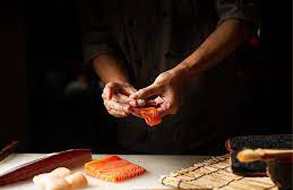

 Aulas Sushi Aulas de Sushi Promoção do Mês Teremos aulas ao vivo, sobre os diversos tipos de comidas, japonesas tradicionais e também como elaborar o tipico, prato chinês sushi, tradicional da cultura japonesa.